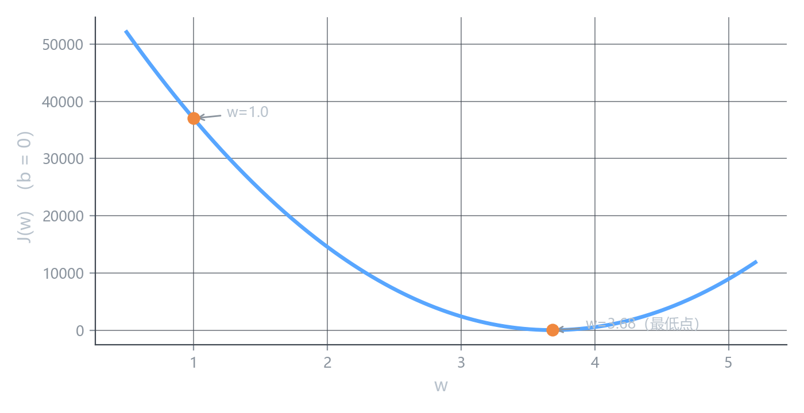
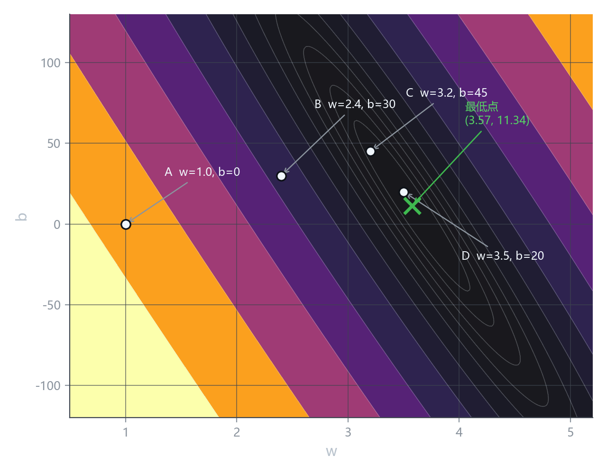

损失函数
上一课留下的两个问题
上一课最后说，机器没有眼睛，它需要两样东西：
- 一个数字，能衡量”这条线现在有多差”
- 一套办法，能告诉它”w 该往大调还是往小调”
这一课解决第一件。第二件是梯度，下一课。
损失函数是什么
把它当成一个普通的函数来看待：
| 输入 | 一组 w 和 b（也就是一条具体的直线） |
| 输出 | 一个数字，越大说明这条线越差 |
| 名字 | 损失函数 loss function，记作 J(w, b) |
它做的事情只有一件：把”这条线好不好”变成一个可以比较的数字。
人眼扫一眼图就知道 D 线比 A 线好。机器不能。但如果把两条线都送进 J，得到 37007 和 40，机器就能比大小——这就是它全部需要的。
公式是怎么来的
对每个店，直线上给出的预测和真实成交价之间差了一截：
\hat{y}^{(i)} - y^{(i)}
直接把这些差加起来不行，有三个问题：
一、正负会抵消。 有的点预测高了，有的点预测低了，一加可能变成接近 0，明明差得离谱却显示”完美”。
解决办法：平方。负数平方变正，正数还是正。
二、点越多，总和越大。 12 个点的总误差一定比 3 个点大，但这不代表模型更差——只是点更多。
解决办法：除以点数 m，取平均。
三、平方后的数太大。 误差是几百万元，平方就是几十万，写起来累。
解决办法：再乘 \frac{1}{2}。这一项纯粹是为了后面求导时把平方的 2 抵消掉，让公式好看。它不改变最低点在哪——把整条曲线压低一半，谷底还是那个谷底。
合起来：
J(w, b) = \frac{1}{2m} \sum_{i=1}^{m} \left( \hat{y}^{(i)} - y^{(i)} \right)^2
其中 \hat{y}^{(i)} = w x^{(i)} + b。
这就是均方误差（mean squared error, MSE），回归问题的标准损失。
这个公式到底在算什么
逐层拆开看：
| 部分 | 含义 |
|---|---|
| \hat{y} - y | 每个点上，预测价比真实价差了多少 |
| 平方 | 消掉正负，并让大错罚得更重 |
| \sum | 把所有点的错加起来 |
| \div m | 平均到每个点 |
| \div 2 | 求导时省事 |
所以 J 读作：平均到每个点，模型猜错了多少（的平方）。
这里的”距离”是竖直方向的差，不是点到直线的垂直距离。
竖直距离才是”预测价减真实价”。垂直距离是几何概念，和价格的高低无关，用它算出来的损失没有意义。
看图上那几条虚线就明白了——全是竖着画的。
亲手算一次
取三个点：面积 62、100、145 平方米，真实成交价 241.2、370.8、532.5 万元。
先用那条明显很差的线 A：w = 1.0、b = 0。
| 面积 x | 真实 y | 预测 \hat{y} | \hat{y} - y | 平方 |
|---|---|---|---|---|
| 62 | 241.2 | 62.0 | −179.2 | 32112.64 |
| 100 | 370.8 | 100.0 | −270.8 | 73332.64 |
| 145 | 532.5 | 145.0 | −387.5 | 150156.25 |
\sum = 255601.53, \qquad J = \frac{255601.53}{2 \times 3} = 42600.26
再用那条基本贴合的线 D：w = 3.5、b = 20。
| 面积 x | 真实 y | 预测 \hat{y} | \hat{y} - y | 平方 |
|---|---|---|---|---|
| 62 | 241.2 | 237.0 | −4.2 | 17.64 |
| 100 | 370.8 | 370.0 | −0.8 | 0.64 |
| 145 | 532.5 | 527.5 | −5.0 | 25.00 |
\sum = 43.28, \qquad J = \frac{43.28}{2 \times 3} = 7.21
| 参数 | J |
|---|---|
| w=1.0,\ b=0 | 42600 |
| w=3.5,\ b=20 | 7.21 |
差了将近 6000 倍。
用全部 12 个点算一遍，结论一样：J(1.0, 0) = 37007.88，J(3.5, 20) = 40.36。
线拟合得越好，J 越小。“找一条好线”和”找一个小的 J“是同一件事。
先只看 w：把 b 固定成 0
两个参数不好画图。先砍掉一个：令 b = 0，只剩 w。
这时 J 就退化成一条曲线：
J(w) = \frac{1}{2m} \sum_{i=1}^{m} \left( w x^{(i)} - y^{(i)} \right)^2
横轴是 w，纵轴是 J(w)：

- w = 1.0 时，J = 37007，在曲线的左端高处
- w = 3.68 时，J = 42，在谷底
w 从 1 调到 3.68，损失从三万七掉到 42。这就是”调参数”在数学上的样子——沿着曲线往低处走。
因为强行让 b = 0，相当于要求这条线必须穿过原点。而这批数据真实最优的 b 约是 11.3，被按死在 0 上，这条线怎么调都差一截。
42 已经是 b=0 条件下的极限。等 b 也放开，损失还能再降——真实最低点是 37.27。
b 也放开：J(w,b) 是一张地形图
两个参数，J 就是一个二维曲面。形状像一只碗：中间低，四周高，碗底只有一个点。
碗底那一点，就是最优的 (w, b)。
但三维曲面不好读——从一个角度看，近处的山会挡住远处的谷。所以换成等高线图，也就是地理课上的地形图：
- 横轴 w，纵轴 b，这是”地面坐标”
- 每一圈是 J 相同的所有点连成的线
- 越暗越低，越亮越高
- 圈越密，坡越陡

图上标了四个点，都是上一课出现过的那几条线：
| 点 | 参数 | J 的量级 | 位置 |
|---|---|---|---|
| A | w=1.0,\ b=0 | 37008 | 左下角，最亮，坡最高 |
| B | w=2.4,\ b=30 | 千级 | 已进中间地带 |
| C | w=3.2,\ b=45 | 百级 | 接近暗区边缘 |
| D | w=3.5,\ b=20 | 40.36 | 很近，但还没到底（真底是 37.27） |
从 A 走到 D，就是上一课”把线慢慢转过去、抬上去”那个过程，在参数空间里的路线。
仔细看等高线：它是一条从左下到右上的长条，不是正圆的。
原因很实在——w 和 b 可以互相补偿。w 调小一点、b 调大一点，落在同一条等高线上，损失几乎不变（因为这条线的走向没大变）。
等高线拉得越长，说明这个方向越”平”，优化时越难判断该往哪走。这一点到后面讲特征缩放时还会回来。
核心概念
| 概念 | 内容 |
|---|---|
| 损失函数 J(w,b) | 输入一组参数，输出一个数，越小说明拟合越好 |
| 均方误差 MSE | \dfrac{1}{2m}\sum(\hat{y}-y)^2，回归的标准损失 |
| \frac{1}{2} 的作用 | 让求导更干净，不影响最低点位置 |
| 距离的方向 | 竖直方向（残差），不是点到直线的垂距 |
| J(w) 曲线 | b 固定时是一条 U 形曲线，谷底是最优 w |
| J(w,b) 曲面 | 一只碗，碗底是唯一最低点 |
| 等高线图 | 碗的二维读法，越暗越低 |
还差一步
现在有了 J，可以判断哪条线更好。但还差一件事：
站在曲线的某个点上，怎么知道往左走还是往右走？
J 只告诉你”现在多高”，不告诉你”哪边下坡”。下一课讲梯度——它回答的正是这个问题。